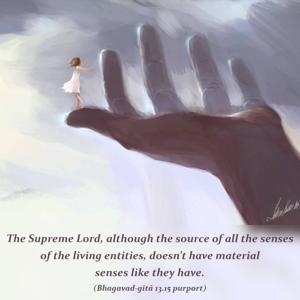
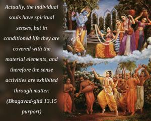
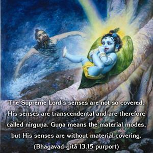
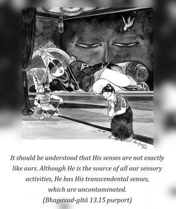
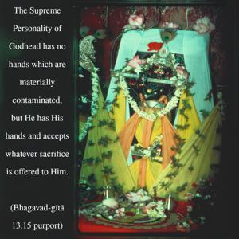
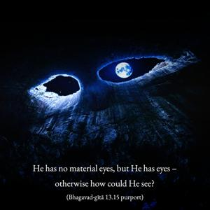

The Supersoul is the original source of all senses, yet He is without senses. He is unattached, although He is the maintainer of all living beings. He transcends the modes of nature, and at the same time He is the master of all the modes of material nature.






The Supreme Lord, although the source of all the senses of the living entities, doesn’t have material senses like they have. Actually, the individual souls have spiritual senses, but in conditioned life they are covered with the material elements, and therefore the sense activities are exhibited through matter. The Supreme Lord’s senses are not so covered. His senses are transcendental and are therefore called nirguṇa. Guṇa means the material modes, but His senses are without material covering. It should be understood that His senses are not exactly like ours. Although He is the source of all our sensory activities, He has His transcendental senses, which are uncontaminated. This is very nicely explained in the Śvetāśvatara Upaniṣad (3.19) in the verse apāṇi-pādo javano grahītā. The Supreme Personality of Godhead has no hands which are materially contaminated, but He has His hands and accepts whatever sacrifice is offered to Him. That is the distinction between the conditioned soul and the Supersoul. He has no material eyes, but He has eyes – otherwise how could He see? He sees everything – past, present and future. He lives within the heart of the living being, and He knows what we have done in the past, what we are doing now, and what is awaiting us in the future. This is also confirmed in Bhagavad-gītā: He knows everything, but no one knows Him. It is said that the Supreme Lord has no legs like us, but He can travel throughout space because He has spiritual legs. In other words, the Lord is not impersonal; He has His eyes, legs, hands and everything else, and because we are part and parcel of the Supreme Lord we also have these things. But His hands, legs, eyes and senses are not contaminated by material nature.
Bhagavad-gītā also confirms that when the Lord appears He appears as He is by His internal potency. He is not contaminated by the material energy, because He is the Lord of material energy. In the Vedic literature we find that His whole embodiment is spiritual. He has His eternal form, called sac-cid-ānanda-vigraha. He is full of all opulence. He is the proprietor of all wealth and the owner of all energy. He is the most intelligent and is full of knowledge. These are some of the symptoms of the Supreme Personality of Godhead. He is the maintainer of all living entities and the witness of all activity. As far as we can understand from Vedic literature, the Supreme Lord is always transcendental. Although we do not see His head, face, hands or legs, He has them, and when we are elevated to the transcendental situation we can see the Lord’s form. Due to materially contaminated senses, we cannot see His form. Therefore the impersonalists, who are still materially affected, cannot understand the Personality of Godhead.